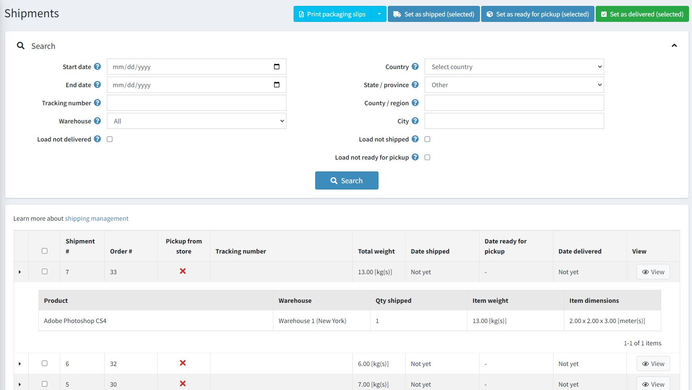
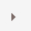
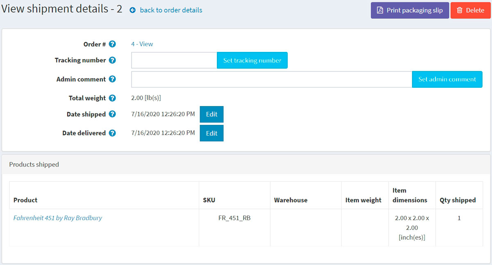
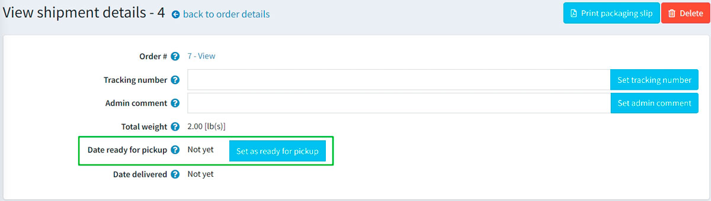

出貨管理
若要搜尋並檢視出貨記錄，請前往 銷售 → 出貨。
出貨清單

頁面頂端區域讓您能夠透過各種搜尋條件來搜尋出貨記錄：
- 開始日期 與 結束日期：搜尋在這段期間內建立的出貨記錄。
- 輸入 追蹤號碼：若您想尋找具有特定追蹤號碼的出貨記錄。
- 選擇 倉庫：搜尋從特定倉庫寄出的出貨記錄。
- 勾選 載入未送達 核取方塊：若您不想載入已經送達的項目。
- 使用 國家、州/省、郡/區域、城市：依據出貨目的地進行搜尋。
- 勾選 載入未出貨 核取方塊：若您不想載入已經出貨的項目。
- 勾選 載入未準備好取貨 核取方塊：若您想載入尚未準備好取貨的項目。
選取特定的出貨記錄，即可執行 設為已出貨 (已選)、設為已送達 (已選) 或 設為準備取貨 (已選)。您也可以選擇 列印包裝明細 (已選) 或 列印包裝明細 (全部) 來列印出貨單據。
在出貨清單中，商店擁有者可以透過點擊出貨記錄第一欄的

來檢視該出貨的所有項目。出貨詳情
如果您點擊 檢視，將會開啟如下的「檢視出貨詳情」視窗：

在此視窗中，您可以執行以下操作：
- 前往訂單頁面。
- 設定出貨的 追蹤號碼。
- 新增供內部使用的 管理員註解。
- 查看 出貨總重量。
- 將出貨標記為 已出貨。
- 編輯 出貨日期。
- 將出貨標記為 已送達。
- 編輯 送達日期。
- 列印包裝明細。
- 刪除 該出貨記錄。
如果顧客在結帳過程中選擇了「店內取貨」的出貨方式，您將能夠將該出貨標記為「準備取貨」。在「檢視出貨詳情」頁面上，此按鈕顯示如下：

出貨設定
若要設定出貨功能，請前往 設定出貨 章節。